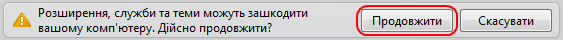
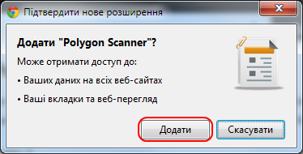
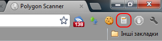
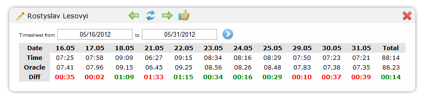

Welcome to Polygon Scanner
Hate to check you time twice a month with polygon?
Hate to convert readable date format to stupid Oracle format?
Want an easy way to verify your team members oracle time before approving it?
Then this plugin is for you :)
Installation
- Obviously, this plugin requires Google Chrome already to be installed and all steps below must be done in Google Chrome browser
- Click on this download link
- Allow Google Chrome to download this plugin 
- Allow Google Chrome to install this plugin 
Congratulations. You've successfully installed Polygon Scanner plugin
Usage
When located on any web page (must start with "http://" or "https://") click on plugin icon:
And popup will appear showing current timesheet for default user (if any set in plugin settings):
Limitations
- Plugin will work only on Windows OS. Custom NTLM API should be implemented in order to support Linux/Mac OS
And finally
Do not forget to vote and invest you GloBucks for this plugin at Glide :)